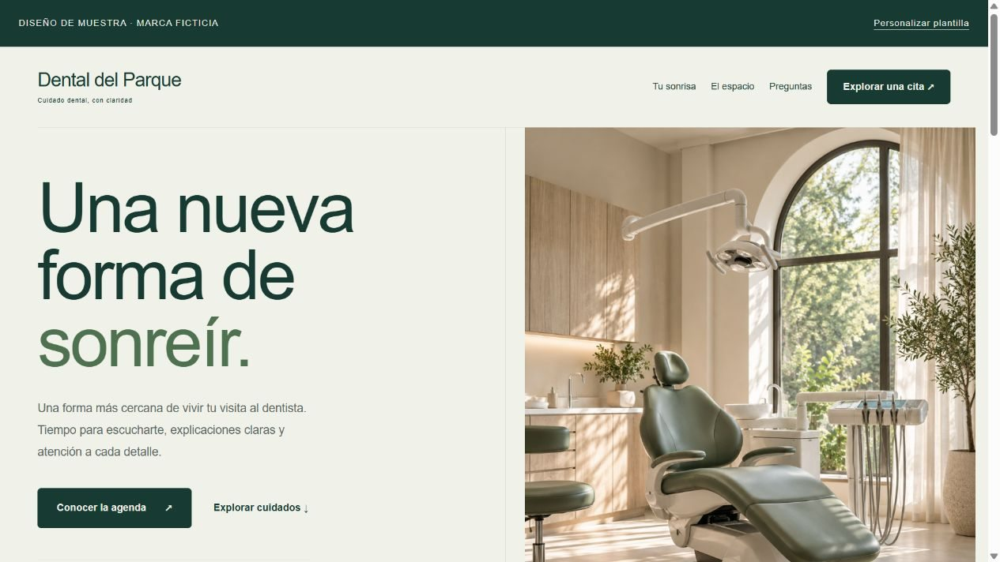
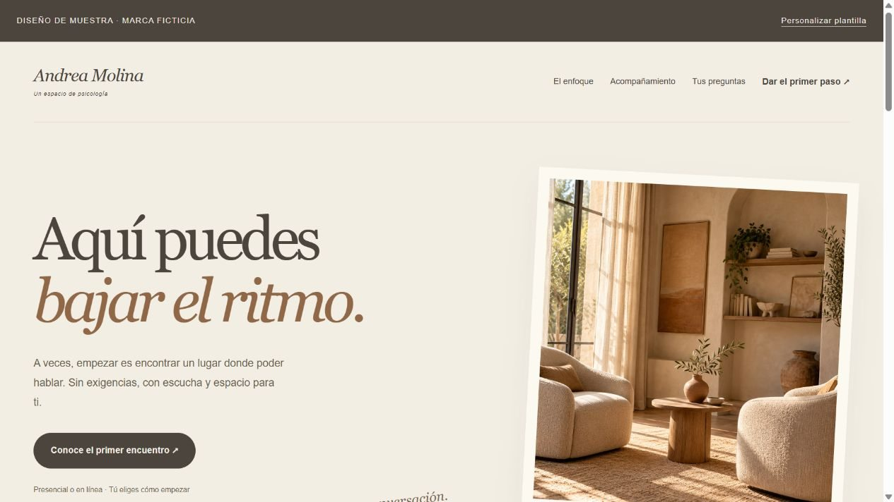
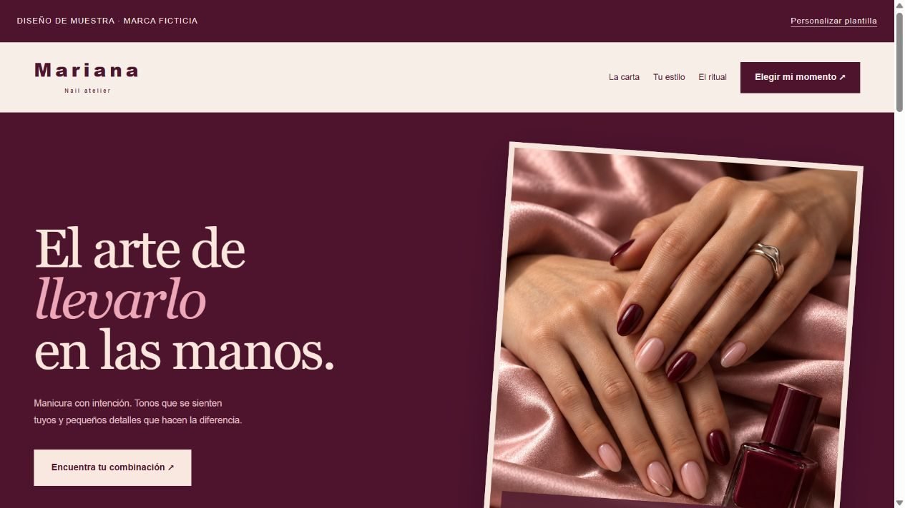

Dental del Parque
Una visita, paso a paso: servicios claros, etapas que puedes explorar y preferencias de contacto.
Cotizar una web dentalUna clínica dental con espacio para explicar. Una consulta de psicología con ritmo editorial. Un estudio de uñas donde el color manda. Tres sitios que puedes adaptar a tu propia marca.
Este es el alcance de la página que cotizas para tu negocio. El paquete descargable tiene su propio alcance.
El registro y la renovación del dominio, alojamiento, licencias, servicios externos de pago y producción de voz o imágenes se cotizan por separado.
This is the scope of the page you request for your business. The downloadable bundle has its own scope.
Domain registration and renewal, hosting, licenses, external payment services and voice or image production are priced separately.

Una visita, paso a paso: servicios claros, etapas que puedes explorar y preferencias de contacto.
Cotizar una web dental
Tipografía editorial, preguntas desplegables y un primer contacto explicado con calma.
Cotizar una web para psicología
Carta editable y selector de tono y acabado con cálculo local a partir de tus precios.
Cotizar una web para mi estudio de uñasEl paquete incluye los tres sitios independientes, HTML/CSS/JS editable, configuración de marca y contacto, imágenes locales y una guía para probar y publicar. Se puede previsualizar sin conexión.
Estas vistas usan marcas ficticias e imágenes generadas con IA. No son clientes, profesionales ni instalaciones reales. Los controles de preferencia no reservan citas; no se incluyen backend, pagos, dominio, alojamiento ni cuentas.
Ver el paquete y sus condiciones